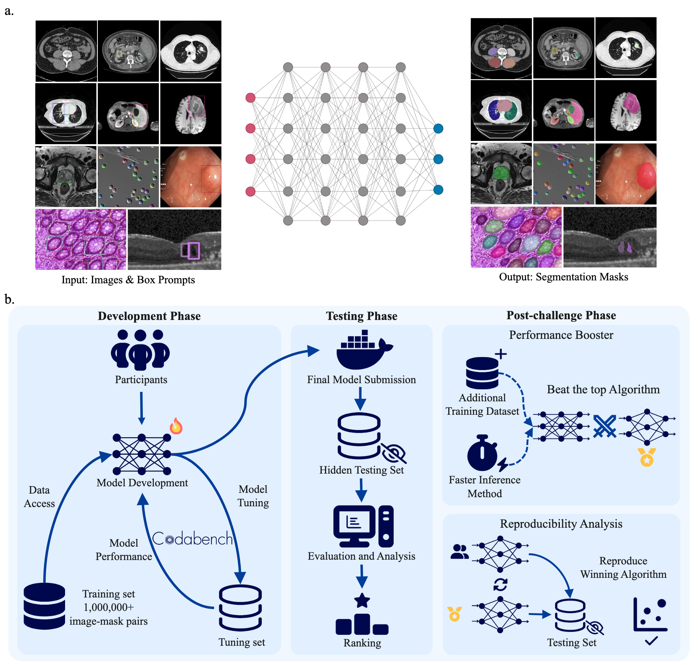
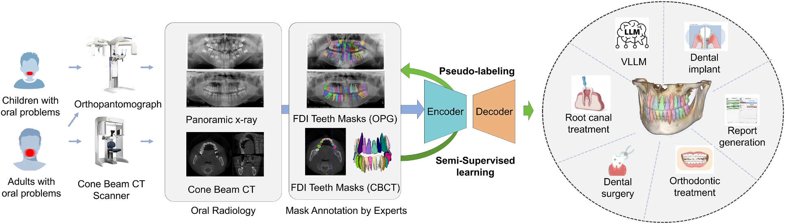
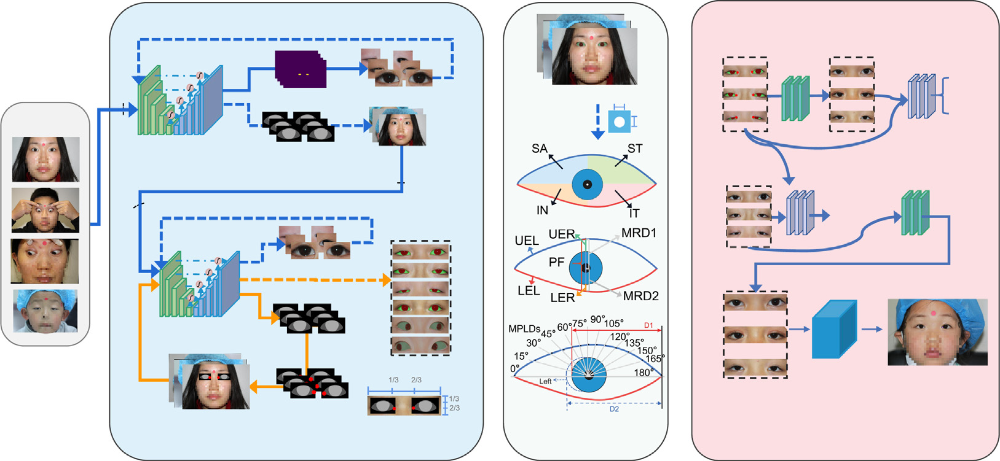
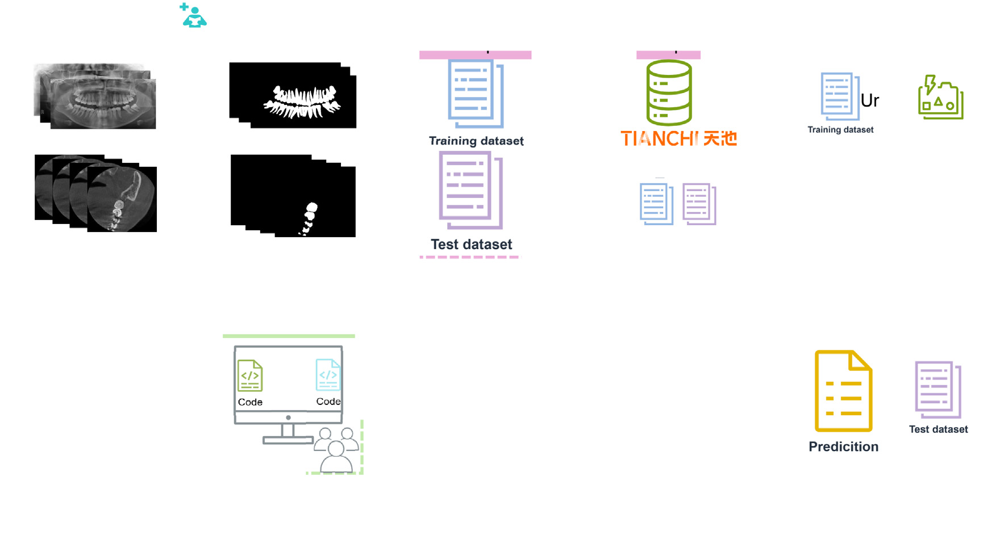

Researching at the intersection of Computer Vision and Medical Image Analysis, with a focus on efficient large vision models (MoE), edge deployment, and multimodal agents for healthcare. Particularly interested in oral/dental AI applications and clinical deployment.




Full list of 12 publications on Google Scholar.
2023 – 2026 (4 consecutive years)
Directed the premier international challenge in semi-supervised dental image segmentation.
Managed a global community of 15,000+ researchers from 10+ countries.
Published challenge summary papers in Pattern Recognition (IF 8.0) and
Medical Image Analysis (IF 10.9), plus Springer LNCS proceedings.
Co-organized the ODIN Workshop (Oral and Dental Image Analysis) at MICCAI 2025.
Reviewer for npj Digital Medicine, Medical Image Analysis, Pattern Recognition.
Algorithms deployed in collaboration with top-tier hospitals including Sir Run Run Shaw Hospital (Zhejiang University), Shanghai Ninth People's Hospital, West China School of Stomatology, and Qiantang Dental. Research bridges the gap between computational methods and real clinical needs.